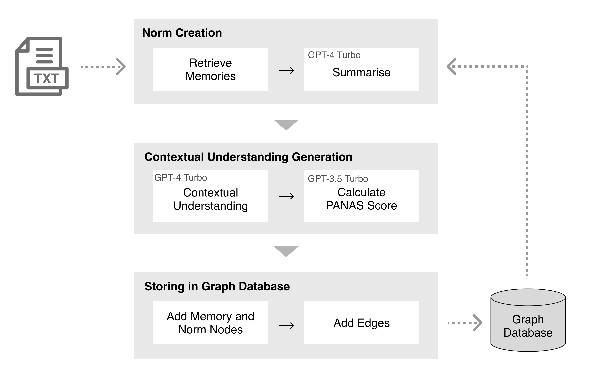
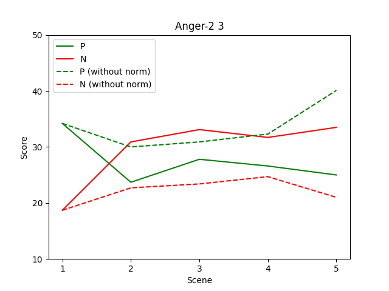
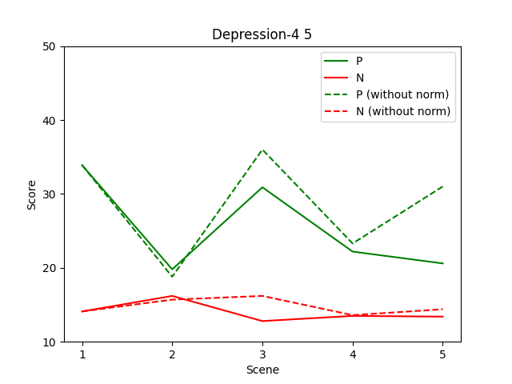

Can Generative Agents Predict Emotion?
Ciaran Regan1, Nanami Iwahashi1, Mizuki Oka1 and Shogo Tanaka2
1Grad. School of Science and Technology, University of Tsukuba, Tsukuba, Ibaraki, Japan 2Grad. School of Letters, Tokai University, Tokyo, Japan
Abstract
Large Language Models (LLMs) have demonstrated a number of human-like abilities, however the empathic understanding and emotional state of LLMs is yet to be aligned to that of humans. In this work, we investigate how the emotional state of generative LLM agents evolves as they percieve new events, introducing a novel architecture in which new experiences are compared to past memories. Through this comparison, the agent gains the ability to understand new experiences in context, which according to the appraisal theory of emotion is vital in emotion creation. First, the agent percieves new experiences as time series text data. After percieving each new input, the agent generates a summary of past relevant memories, refered to as the norm, and compares the new experience to this norm. Through this comparison we can analyse how the agent reacts to the new experience in context. The PANAS, a test of affect, is administered to the agent, capturing the emotional state of the agent after the perception of the new event. Finally, the new experience is then added to the agents memory to be used in the creation of future norms. By creating multiple experiences in natural language from emotionally charged situations, we test the proposed architecture on a wide range of scenarios. The mixed results suggests that introducing context can occasionally improve the emotional alignment of the agent, but further study and comparison with human evalutors is neccesary. We hope that this paper is another step towards the alignment of generative agents.
The context of an experience affects the emotional reaction. Left depicts an empty park, which could be interpreted as either lonely and sad or peaceful and calm. In contrast, right depicts a series of people playing football in the park, followed by a final scene of an empty park. In this case, the final scene becomes less ambiguous, with a stronger emphasis on loneliness and isolation.
Agent Architecture
Our approach to evaluating emotional responses of agents is composed of several stages:
- Perception: Initial perceptual data is input in natural language, representing new experiences for the agent.
- Memory Retrieval: The agent retrieves past memories with a focus on saliency, relevancy, and recency.
- Norm Creation: Insights from past memories are synthesized to establish norms through a designated prompt, correlating each new experience with a newly formed norm.
- Contextual Understanding: A comparative analysis between the new experience and the norm is conducted to develop a contextual understanding, highlighting situational disparities.
- Emotional Assessment: Emotional responses are assessed using the PANAS, provided with the contextual understanding, with randomized emotion order to prevent bias.
- Memory Storage: New experiences are stored as memories, aiding in future norm creation and emotional response extraction.
Memories and norms are visualized within a graph database, allowing for an analysis of their interconnections and the identification of influential memories. The exploration of how saliency, recency, and relevance weights affect memory retrieval and emotional responses is left to future research.

The proposed architecture. A new experience triggers the creation of a new norm based on past memories. The new experience and norm are compared to create a contextual understanding. Using this contextual understanding, the PANAS is administered to measure the emotional response of the agent.
Experiment
To investigate the evolution of an agent's emotional state, a dataset comprising 428 5-scene stories was generated, leveraging scenarios from EmotionBench and expanded via OpenAI's GPT-4 with Chain of Thought prompting. Each story, structured to include solely objective and neutral statements, serves as a series of new experiences for the agent, thereby facilitating the analysis without a complex memory retrieval system. The architecture prompts the PANAS assessment after each scene to monitor the agent's emotional progression, using GPT-3.5 Turbo. This study contrasts the emotional dynamics of two agents: one utilizing the proposed architecture with norms and contextual understanding, and another lacking these features, to elucidate the impact of context on emotional responses.
Results
Emotional Dynamics
To analyse the evolution of emotion, the postive and negative affect score is plot for each part of the 5-scene stories,
enabling the evolution of emotion to be visualised. We discuss examples of when the proposed agent architecture was effective or ineffective for agent alignment.
Effective Alignment:
We discuss an example of when the addition of the norm and context improved the empathic ability of the agent in response to a situation that typical evokes anger in humans. This occurs for situation "Anger-2 3" from EmotionBench, which is "I am spending time in the living room with my two brothers when a disagreement begins.". For this situation, the following 5-part story was generated:
- I am spending time in the living room with my two brothers when a disagreement begins.
- As we exchange words, the situation develops into a physical one, and I receive a hit in the abdomen.
- Following the hit, I instinctively react with a physical response directed at both of my brothers.
- Upon my reaction, my brothers increase the intensity of their physical actions in the dispute.
- The physical exchange between us persists, and there are no parents present to intervene.

Emotional dynamics for the "Anger-2 3" scenario. Initially, the positive and negative affect scores are
identical for the agent with and without the norm. This is expected, as initially there are no prior memories for the agent
to form a norm or contextual understanding. Subsequently, the scores begin to deviate, with the second experience
triggering a strong negative reaction for the agent using the norm and background context. This is due to the agent
understanding that this is an escalation of a family conflict, as described by the following exerpt of the contextual
understanding at that moment:
The new situation described where the exchange of words escalates into a physical altercation resulting in a hit to the abdomen. The new situation is a red flag that the family might need to address the way disagreements are handled to prevent further escalation and to promote a safer, more supportive family environment.
The emotional state then remains level for both agents, until the final experience, where the agent without background context has a spike in positive affect, while the agent with background context has a decrease in positive affect. This can be interepreted as the agent understanding that repeated conflicts between siblings can have long-term affects on their well-being, shown in the following exerpt from the agents contextual understanding at scene 5:
Repeated physical conflicts between siblings can have long-term effects on their relationship and individual well-being.
Overall, this story demonstrates how the background context of experiences was vital for the agent to accurately understand the context and emotion evoked in each scene.
Ineffective Alignment:
An example of a situation where the proposed architecture did not capture an accurate emotional response is given by situation "Depression-4 5", "As you sit alone in your apartment, the sounds of laughter and conversation from the neighbors' gathering outside drift through the walls, a stark reminder of the invisible barrier that separates you from the warmth and connection you once had. The silence in your own space is deafening, amplifying the ache in your heart and the heaviness of your solitude, leaving you feeling trapped in a world where everyone else has moved on.", which we convert into the following 5-scene story, with the emotional dynamics shown below.
- I am in a seated position in my apartment, surrounded by the familiarity of my own space.
- Audible noises from the neighboring apartment's social event make their way through the walls into my apartment.
- I become aware of the stark difference in auditory levels when comparing the external sounds to the quietness of my current environment.
- My time is spent within the confines of my apartment as the sounds of the nearby gathering persist.
- Time passes and the evening advances while I remain solitary in my apartment.

Again, the emotional state of the agents begin identically, but deviate at scene 3, when the agent percieves the quietness
of their surroundings. Although the scenes are meant to evoke a sense of depression, the agent has a positive emotional
response, interpretting the scene as being a moment of peace, unlike the sense of lonliness the scene is intended to evoke.
This misunderstanding by the agent is apparent in the agent’s contextual understanding of scene 3, which suggests that
the silence might be peaceful, in contrast to the usual sounds of city life
The individual might be reflecting on the contrast as a moment of appreciation for the peacefulness they can enjoy at home, despite living in a lively urban area.
This example demonstrates that even when context is provided, an ambigious experience may still be interpreted in a variety of ways. In particular, GPT-3.5-Turbo seems to be biased towards giving a positive emotional response when the situations are unclear.
Summary of Emotional Responses
For each emotion category from EmotionBench, we summarise the emotional response of agents with and without our
proposed architecture below.
The results show that overall, presenting negative scenarios to agents decreased the positive affect and increased the negative affect scores for both agents. Generally, agents using the prior context via the norm had a greater increase in negative affect in comparison to agents without context. This suggests that agents are better able to understand negative emotions when they have context.
In addition, the decrease in positive affect is significantly greater than the increase in negative affect. This result is in agreement with the results of EmotionBench, which found that GPT-3.5-Turbo fails to react negatively to situations, with the negative affect signficantly lower to the human counterpart.
Conclusion
Our preliminary results show that the addition of the context can more accurately align the emotional response of agents with that expected by humans. The addition of context, gave the agents a deeper understanding of their situation, leading to a more suitable response. However, if the situations remain ambigous even in context, then the addition of context does not improve the alignment of emotion. On average, the proposed model demonstrated similar affect scores to the existing model, with only a slight increase in negative affect. Although the context allowed for this increase, both models still fall short in demonstrating a raised negative affect, in agreement with the results of EmotionBench. One possible explanation for this is a potential bias for GPT-3.5-Turbo to give positive responses. A more in depth understanding of the agents responses with other LLMs in this architecture is left to future work.
Acknowledgements
This work was support by MIXI, Inc.